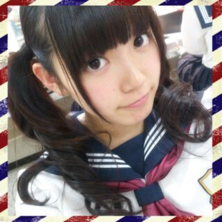

| 2013/11 11 Mon | ひめたん(*>ω<*)そ の367 |
今日はMUSIC JAPAN、Rの法則の収録でした☆
まいやんちゃーんっ*\(^o^)/*

MJ観に来てくださった方
ありがとーう！バレッタいかがだったでしょうか？
選抜メンバーとして
憧れの存在であるPerfumeさんと共演することが
芸能界での目標のひとつだったので
今日 MJさんで叶って光栄です///
少しですがお話もできて
ますます大好きになりました。
これからも応援しています！
ら
Rの法則はオンエアを楽しみにしててください♪
昨日の乃木どこ
見てくださった方ありがとー( ^ω^ )
いやーみんな面白いなー
キワどい答えがいっぱいで
どきどきしましたね！ふふへ
来週は7thキャンペーン企画っ
いつもコメントありがとうございます

お仕事の合間とか、学校の合間とかに
コメント増えてるともうわくわくしちゃう∩^^∩
ホットドリンクたくさん教えてもらって
なんだかほっこりしました＊
ひめたんは猫舌だからね
あったかいの作ってから
５分置いたくらいが飲み頃。
変わりダネもあったから作ってみるね
ジンジャーミルクティも
是非飲んでー( ´ ▽ ` )
＼ 今日はセーラー服でした ／


 ひめたんが着てたうさみみの
ひめたんが着てたうさみみの
おりぼんがついてるもこもこの
着ぐるみ売ってるところ分かったの
おそろいにしてもいい ？
わーい\(^O^)/
おそろいにしたいよー♪
動物さんいろーんな種類いたから
ほかの動物さんにしても楽しいかもねっ
洋服のブランドはどこが好き？
LODISPOTTO、earth music & ecology、
ワンピースならLIZ LISA
とか好きだよー☆
ひめたんは普段遊ぶときのメイクは
濃いの？薄いの？
濃ゆくしたいけどできなくて
結局ナチュラルになってしまう(´・ω・｀)
ひめたんも濃ゆいメイク修得したい......
ひめたんって、目が大きいよね〜♪
メイクのコツとかあるの？
全部メイクさんにおまかせよー
あとはなんだろう。
目のまわりを軽くマッサージしたら
それだけで変わると思うよ！
ひめたんが文化祭でやりたい出し物はなに？
メイド喫茶の呼び込み係(´ω`)
メイド服着たいけど
お店を守るのはちょっとあれだから
「みんなー来てねー」ってやつやりたい。
ひめたんは偶然空見上げて、
流れ星見たことある？
そこまでロマンチックな感じじゃ
なかったかもしれないけど
流れ星みたことあるよー(*^O^*)
ひめたんは ひめパパと 良く話すのかな？
よくはなすよー♪
ぱぱと姉妹たちはなかよしです！
初の選抜入りで仲良しの生ちゃんから
何かアドバイスやお祝いの言葉は貰ったかな？
発表された直後も、収録終わったあとも
一緒に喜んでくれました(^O^ )
アドバイスかあーなんだろうー
いくちゃんに限らないけど
身をもっていろいろと学ばせてもらってます
百聞は一見にしかずってこーゆーこと♪

ある企画ゆーて
みんなブログに書いてたね(笑)
そうですナタリーさんのバック８特集！
ひめたん初のソログラビア( ∀ )/
とってもいい感じに撮っていただきました
解禁まで楽しみに待っててねー
その時にやったヘアが
メンバーさんスタッフさんから好評だったり
コメントでも「いいね！」って意見があったので
いままでのくるくるツインもやりつつ
たーまーにゆるふわおろしスタイル
(前回のブログの写め参照)もやろっかなー♪
明日は撮影◎どきどきっ
(＊´・ω・＊)
コメント(362)
2013/11/11 23:48